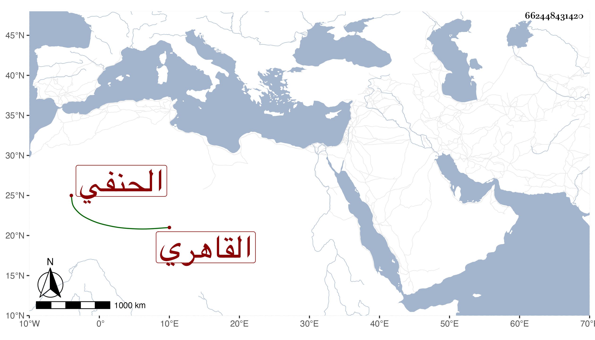

0902Sakhawi.DawLamic.ITO20230111-ara1.EIS1600.662448431420
Biography ID: 662448431420
390
محمد بن أبي بكر بن أحمد الشمس القاهري الحنفي ويعرف بابن السقاء ، اشتغل بالفقه وأصوله والعربية والصرف والمعاني والبيان والحديث وغيرها ، ومن شيوخه ابن الديري وابن الهمام والأقصرائي وشيخنا ولازمه حتى قرأ عليه شرح النخبة وسمع عليه أشياء وأشير إليه بتمام الفضيلة ، وتنزل في الجهات وناب في القضاء ولم يظفر منه بطائل . مات وقد قارب الستين أو جازها في ربيع الأول سنة ثمان وثمانين عفا الله عنه .
